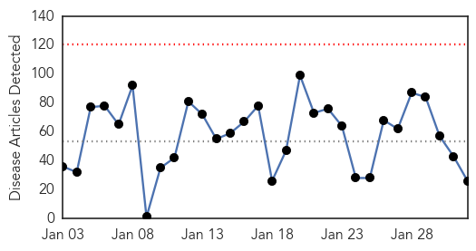
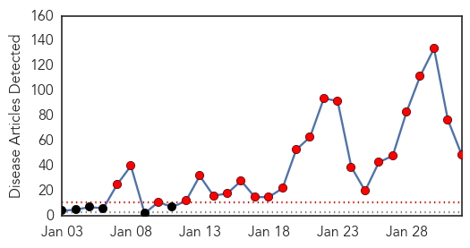
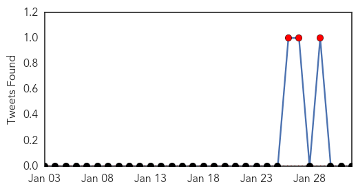

Unknown
30-Day Web Trend
0 alerts, 0 warnings

30-Day Twitter Trend
3 alerts, 0 warnings

Article Locations

Article Confidences

Top Articles:
- 0.984
- Number of Bird Flu Cases in China's Guangdong Province Reaches 30
- 0.967
- Finally CDC Have Issued A Flu Vaccine Apology
- 0.917
- Chicago Tribune
- 0.917
- Chicago Tribune
- 0.917
- Chicago Tribune
- 0.917
- Chicago Tribune
- 0.910
- 9 tips to prevent the flu during pregnancy
- 0.910
- The world windows to Thailand
- 0.866
- Two bombs explode outside luxury Bangkok mall, no injuries -Thai police
- 0.866
- Al Jazeera journalist Mohamed Fahmy expected to be released from Egypt jail soon
- 0.845
- Enterovirus may be linked to paralysis in 12 Colorado children, study finds
- 0.787
- Health horror for tiny town as six people hit by mystery rare disease
- 0.760
- Kennesaw State University reports TB case in student, TST testing scheduled for Tuesday
- 0.753
- Eliminating Leprosy Needs Renewed Efforts, Greater Push
- 0.713
- 'Atypical' case of mad cow disease confirmed in Norway
- 0.702
- OPEN LETTER: Response to Minister Motsoaledi’s statement on forensic labs (DA
- 0.702
- Nurhi Donates Vehicle to Edo Health Ministry
- 0.698
- S. Korea reports another suspected foot-and-mouth case among cattle
- 0.691
- Investigation launched into suspected cluster of rare disease which may have struck down six victims in ONE tiny town
- 0.604
- South Sudan president and rebel leader sign ceasefire deal
- 0.604
- Japan in shock as IS group claims killing of Kenji Goto
- 0.604
- French nostalgic for DSK despite pimping charges
- 0.604
- Egypt deports jailed Al-Jazeera journalist back to Australia
- 0.604
- Boko Haram, Nigerian troops battle for control of Maiduguri
- 0.592
- Decline in leprosy cases across the Caribbean
- 0.558
- Three new polio cases reported - Pakistan
Top Tweets:
-
No tweets found for Feb 01, 2015
Measles
30-Day Web Trend
24 alerts, 0 warnings

30-Day Twitter Trend
3 alerts, 0 warnings

Article Locations
Article Confidences
Top Articles:
- 0.992
- Why Even Vaccinated People Can Catch Measles
- 0.991
- Disneyland’s measles outbreak triggers vaccination debate in US
- 0.988
- Measles Cases Mount; White House Urges Vaccinations
- 0.978
- Measles case confirmed at University of Minnesota
- 0.973
- Florida: 4 measles cases reported in travelers, vaccinations urged
- 0.965
- California measles outbreak
- 0.961
- Rise in measles cases marks a 'wake-up call' for U.S.
- 0.946
- Measles outbreak grows to 107 cases, latest in Marin County
- 0.942
- Young American adults, vaccines and autism: Poll results
- 0.941
- Measles case no longer contagious
- 0.938
- Measles Cases In The US Now Over 100
- 0.932
- More measles cases found in California
- 0.930
- Health officials warn about measles cases found in FL
- 0.900
- CDC warns of 'large outbreak' of measles
- 0.899
- Measles Spreading Across Nation, Including In Delaware « CBS Philly
- 0.881
- In the midst of the nation's second biggest measles outbreak
- 0.877
- CDC "very concerned" about potential for large measles outbreak
- 0.874
- BILL CRAWFORD: Keep schools free from preventable diseases
- 0.869
- CDC director Frieden on the measles outbreak
- 0.864
- NY Student with Measles Takes State-Wide Train
- 0.853
- Editorial: Measles outbreak could have been prevented
- 0.831
- Amid growing vaccination debate, measles continues to spread and is now in New York state
- 0.828
- CARPHA issues measles alert
- 0.828
- CDC warns of 'large outbreak' of measles
- 0.825
- Quotes of the day « Hot Air
- 0.825
- Quotes of the day « Hot Air
- 0.818
- CDC warns of 'large outbreak' of measles
- 0.810
- Howard Dean on not getting vaccinated: ‘This is nut-job medicine’
- 0.807
- Amid measles outbreak, Arizona doctor wages battle against vaccines
- 0.769
- The Science 'Is Really Clear'
- 0.755
- Anti-vaccine talk puts people at risk
- 0.741
- The Portland Press Herald / Maine Sunday Telegram
- 0.727
- Is Indiana's vaccination rate high enough to keep out measles?
- 0.724
- Anti-vaccine parents boost measles return — Another view
- 0.709
- Mom of 3-Year-Old Measles Patient Calls Diagnosis 'Shocking'
- 0.707
- As measles outbreak grows, Arizona doctor wages campaign against vaccines
- 0.678
- Anti vaccination movement blamed for US measles outbreak
- 0.662
- No one should be catching the measles
- 0.661
- Mom of 3-Year-Old Measles Patient Calls Diagnosis 'Shocking'
- 0.623
- Measles confirmed in Bard College student, warning issued for Amtrak travelers
- 0.620
- Some doctors refusing to see patients who don’t vaccinate
- 0.617
- Obama tells parents to get kids vaccinated to stem measles
- 0.595
- Anti-vaccine parents get defensive over measles
- 0.568
- Florida's vaccination exemptions rising
- 0.564
- More Arizona patients exposed to measles
- 0.563
- Secy for zero tolerance in anti-measles drive
- 0.528
- Anti-vaccine movement causes worst measles outbreak in 20 years
- 0.507
- Student With Measles Rode Upstate Through Westchester
- 0.501
- More Arizona Patients Exposed To Measles
Top Tweets:
-
No tweets found for Feb 01, 2015